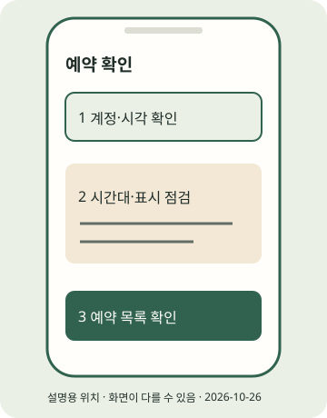

(실습) 실습편 / 9
(실습) 9. 선택 · 예약과 자동 실행
예약 여부·시간대·취소 경로를 확인하고 기록한다.
2026년 10월 조사 기준 · 확인일 2026-10-26 · 근거: PRAC-23 PRAC-07 PRAC-13 · E2E 한눈에 보기
진행 기록은 자바스크립트를 켜면 이 브라우저에 저장합니다.
이 실습의 흐름

STEP 01 · 예약 가능한 화면 찾기
예약 가능한 화면 찾기
지금 하는 일
필요한 표시를 유지하며 예약할 수 있는지 확인합니다.
왜 하는지
예약 기능이 보인다는 이유만으로 모든 콘텐츠를 처리한다고 가정하지 않습니다.
따라 하기
- 최종 게시 설정에서 아래 후보의 예약 기능을 찾아봅니다. 보이지 않으면 수동 앱 게시 경로로 돌아갑니다. 국가 전체의 비지원으로 단정하지 않습니다.
- 현지 날짜·시간·시간대·대상 계정·파일·캡션·필요한 AI/협찬 표시를 확인합니다. 30일/75일 자료 상충으로 현행 한국 예약 한도를 확정하지 않습니다.
- Business Suite를 선택한다면 본인 프로필 연결/접속 조건을 먼저 확인합니다. 데스크톱의 정확한 버튼·페이지 연결 조건은 이번 조사에서 미확인입니다.
이렇게 보이면 성공
본인 화면에서 날짜·시간·대상·필수 표시를 확인했고 예약 완료 상태를 확인했습니다. 안 되면 보류 또는 수동 게시로 기록합니다.
이렇게 보이면?
- 필수 라벨·음원 지원이 불명확하면 예약하지 말고 실습 7로 돌아가세요.
- 저장됐는지 모를 때 새 예약을 반복하지 말고 목록부터 확인하세요.
Windows
이 단계는 Windows와 무관한 휴대폰 또는 웹 작업입니다. 휴대폰 OS와 앱 버전의 화면 차이는 공식 도움말로 확인하세요.macOS
이 단계는 macOS와 무관한 휴대폰 또는 웹 작업입니다. 휴대폰 OS와 앱 버전의 화면 차이는 공식 도움말로 확인하세요.STEP 02 · 예약 목록과 취소 경로 확인
예약 목록과 취소 경로 확인
지금 하는 일
예약한 항목을 다시 찾아 수정·취소 가능 여부를 확인합니다.
왜 하는지
잘못된 시간이나 중복 예약을 발견할 수 있게 합니다.
따라 하기
- 예약 직후 목록에서 대상 계정·예약 시각·파일·캡션을 다시 확인합니다.
- 수정·취소가 필요한 경우 아래 후보와 공식 도움말을 확인합니다. 취소했다고 생각한 뒤에는 목록 상태도 다시 봅니다.
- 예약 시각 뒤 실제 게시물과 표시를 본인이 확인합니다. 예약 저장은 실제 게시 완료가 아닙니다.
이렇게 보이면 성공
예약 시각·확인한 목록·수정/취소 경로와 실제 게시 여부를 기록했습니다.
이렇게 보이면?
- 목록이 안 보이면 예약 도구·대상 계정·날짜 필터를 확인하세요.
- 예약 시각이 지나도 게시물이 없으면 실패 상태부터 확인하고 중복 업로드를 피하세요.
Windows
이 단계는 Windows와 무관한 휴대폰 또는 웹 작업입니다. 휴대폰 OS와 앱 버전의 화면 차이는 공식 도움말로 확인하세요.macOS
이 단계는 macOS와 무관한 휴대폰 또는 웹 작업입니다. 휴대폰 OS와 앱 버전의 화면 차이는 공식 도움말로 확인하세요.STEP 03 · 자동 실행의 경계 정하기
자동 실행의 경계 정하기
지금 하는 일
생성·검수·게시·갱신을 별도 작업으로 구분합니다.
왜 하는지
검수와 토큰 만료를 건너뛴 자동화를 만들지 않기 위해서입니다.
따라 하기
- 키트는 예약 서비스·호스팅·토큰 자동 갱신을 제공하지 않습니다. OS 스케줄러 등록은 이번 조사·구현 범위가 아닙니다.
- 자동 실행을 계획한다면 생성 → 사람 검수 대기 → 승인한 자료만 전송으로 나눕니다. 승인 명령은 드라이런입니다.
- 컨테이너는 미발행 상태에서 24시간 후 만료하므로 먼 미래 게시용으로 미리 만들지 않습니다. 토큰은 24시간 이후·만료 전에 갱신할 별도 비공개 절차가 필요합니다.
예약 도구 / 대상 계정:
현지 게시 시각 / 시간대:
필수 라벨 확인:
사람 검수·승인할 시점:
예약 목록·취소 위치:
실제 게시 확인 결과:이렇게 보이면 성공
예약 기록에 검수·시간대·취소·게시 확인이 포함되고, 키트가 제공하지 않는 기능을 구분했습니다.
이렇게 보이면?
- 승인 없이 전송하는 자동화를 만들지 마세요.
- 발행 응답 유실 뒤 전체 파이프라인을 다시 돌리기 전에 기존 게시 상태를 확인하세요.
Windows
이 단계는 Windows와 무관한 휴대폰 또는 웹 작업입니다. 휴대폰 OS와 앱 버전의 화면 차이는 공식 도움말로 확인하세요.macOS
이 단계는 macOS와 무관한 휴대폰 또는 웹 작업입니다. 휴대폰 OS와 앱 버전의 화면 차이는 공식 도움말로 확인하세요.지금 내 손에 있는 것
예약 여부·시간대·취소 경로를 확인하고 기록한다. 아래 단계 확인을 모두 마쳤는지 E2E에서 다시 봅니다. 선택하지 않은 포맷·심화는 미완료로 남겨도 됩니다.